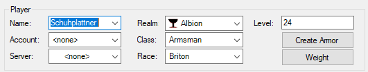

How can I create such a stupid configuration (template)?
Then I want to give a short guide. As an example, we create an Albion
weapon master named Schuhplattner for the first Battleground (BG1).
Step 1: Player information
First some important information about the player for which a
configuration is to be created.

Step 2: Create Armor
After that we click on "Create armor".
However, the tubular plate offered is too expensive for us, which is why we switch to mithril plates. The AF field should now read 50 and Bonus should read 15%.
We accept this armor with Ok.
Step 3: Set weights
Next we set the weights.
Resistances don't interest us at all in BG1, which is why we set all 9 sliders to 0.
We want a small gunsmith who works with polearms that deal slashing damage. That's why we're setting the Strike, Thrust, and Greatsword sliders to 0, as well as the Crossbow slider. S
ince we might also need a shield to ward off an intrusive archer, we set the shield slider to 50%.
We have now set the basic things.
Step 4: Find Drop Items
The first thing we should do is gather some gear for the location that we
can't have a player craft.
Let's start with a cat.
A double click on the neck rectangle opens the search dialog.
There really isn't a good chain for the level, I used the "Necklace of Perseverance" which increases stat by 12 for a benefit of 8.
As shown in the Location/Origin field, it's a quest reward, so it's pretty easy to get.
Now do the same with the cloak (double click on cloak). Here my choice falls on the "disembodied cloak", which according to the description drops at the skeleton centurions in Cornwall. The same for the rest of the jewelry.
Jewel -> Skull Totem
Belt -> Belt of the Crypt Devourer
Rings -> Keltoi Ranger Ring, gobling-forged ring
Wrists -> Goblin Bracer of Speed, Zudd's Rogue Bracer.
Our values should then look like this:
Step 5: Create a Weapon
Next we want to create a proper weapon.
To do this, we click on the position for two-handed weapons and activate
the adjacent box.
After that we change the weapon type to polearms. In the field to the
right I then set halberd, a very slow polearm with slashing damage.
Platinum is chosen as the material.
Step 6: Banishing
Now let's get down to business. We banish the weapon. To do this, we
activate the Bonuses tab.
As you can see in the picture, our weapon has 14 imbue points, none of which are occupied at the moment. Haven't chosen any effects yet.
First, we want to apply an effect that increases polearm skill. For this we set the effect type to skills for effect 1. For effect, we then choose polearms. As a value we set 2, which requires 5 IP. We don't need to adjust the quality and leave it as it is.
The line should then look like the following graphic.
Then we choose 3 more effects. I chose cut, strength and hitpoints here.
Then we adjust the strength of the effects so that we don't exceed the
existing 14 imbue points.
It looks like this for me:
The whole thing can now also be done for all armor parts, which I would
like to do without here.